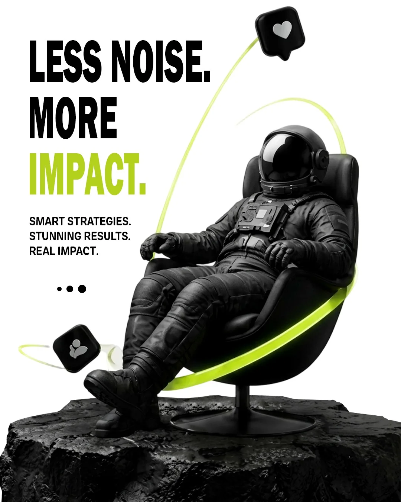
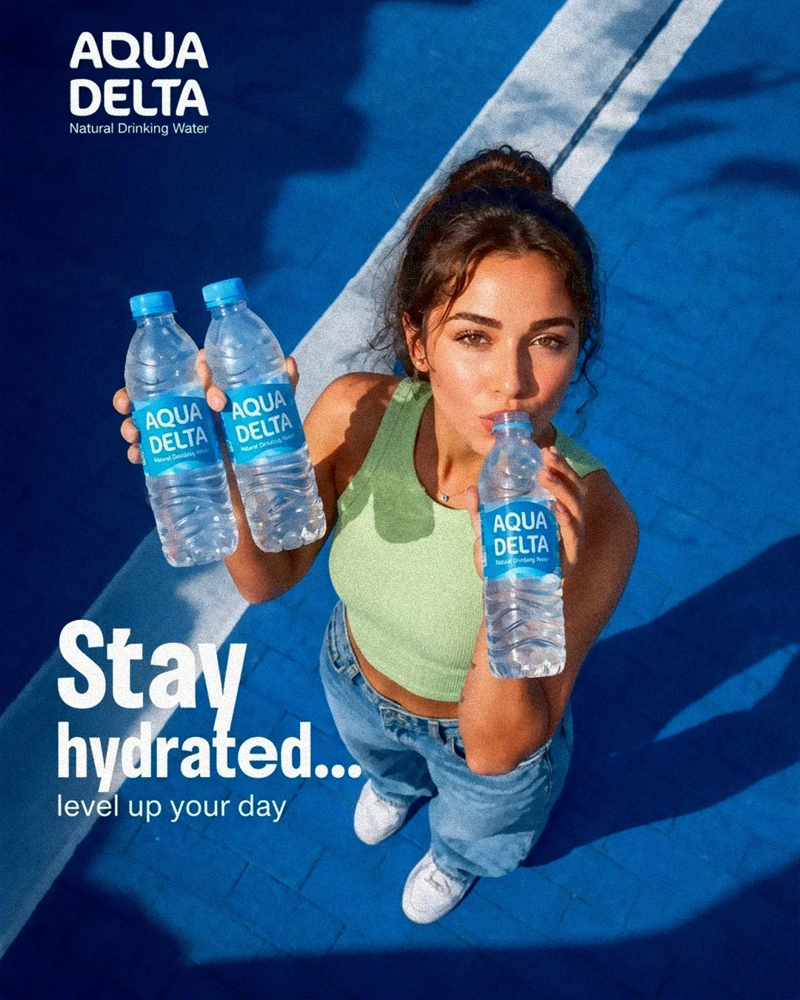
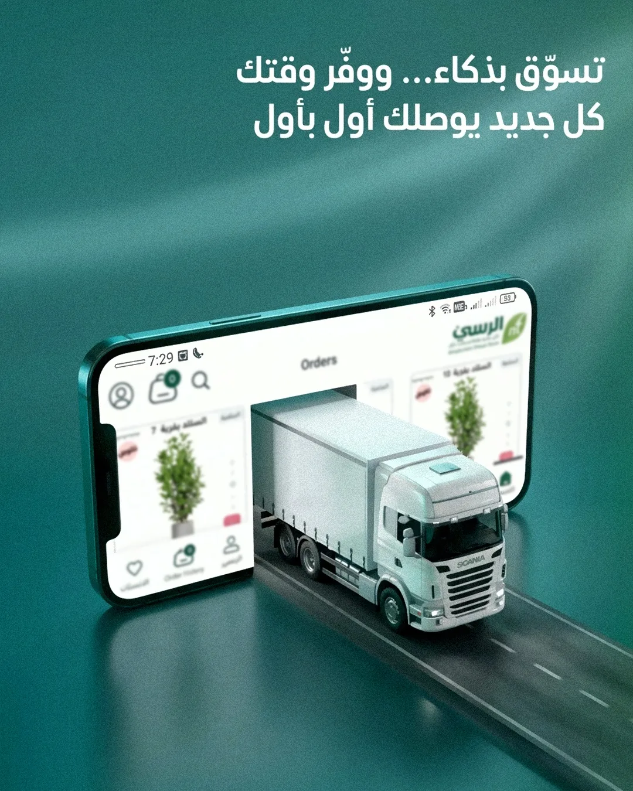

03 / SOCIAL MEDIA
Social Media Design.
Campaigns and content designed to capture attention, communicate clearly and keep a consistent visual language.
SOCIAL MEDIA PROJECTS
Explore each project folder.
Each project has its own folder with a dedicated gallery, so the work stays organized and easy to browse.

04 FILESPROJECT / 01
Campaign Concepts
Standalone social media concepts built around clear messages, strong art direction and memorable visuals.
OPEN PROJECT ↗
04 FILESPROJECT / 02
Aqua Delta — Social Campaign
A consistent hydration and lifestyle campaign with a connected visual language.
OPEN PROJECT ↗07 FILES
PROJECT / 03
Netroots — Digital Marketing Campaign
A digital marketing campaign covering brand awareness, lead generation and digital services.
OPEN PROJECT ↗
04 FILESPROJECT / 04
Al Rusi — App & E-commerce Campaign
A set of Arabic promotional visuals for shopping, delivery and business app features.
OPEN PROJECT ↗Have a project in mind?
Let's create something clear, distinctive and memorable.